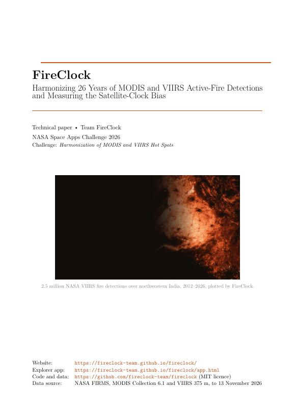

FireClock joins 26 years of NASA MODIS and VIIRS fire detections into one consistent burning calendar for any place on Earth, and measures what every other fire record assumes: what time the satellite looked.
Satellite fire counts are how North India's crop burning, and the policies against it, are judged. Its smoke adds to some of the worst air on Earth. But a count is only a sample of the moment the satellite passes over. Fewer fires, or fires the satellites didn't see?
The challenge notes that MODIS and VIIRS differ in "observation schedules". Typical harmonization fixes only the first break. FireClock handles all four.
NASA's Aqua satellite has been drifting later every year. We turned that drift into an instrument. Drag the year and watch its clock hand move away from the VIIRS satellites, and the hidden fire appear.
Measured from NASA FIRMS detections over Punjab & Haryana. 2026 season to 13 Nov. Same satellite, same drift, wheat season stays flat, so it is fire after the pass, not the sensor.
~3,900 scripted FIRMS API requests with quota-aware throttling, caching and resume: MODIS C6.1 (Terra, Aqua) and VIIRS 375 m (S-NPP, NOAA-20, NOAA-21). Factories, gas flares and volcanoes NASA labels are removed.
Every detection is converted to local solar time, so each satellite's real look time is measured per area, season and year, never assumed from orbit tables.
NOAA-20 and NOAA-21 are bridged to S-NPP (×0.96, ×0.99) and averaged, never added: more satellites never means more fire, and the record survives S-NPP's end.
MODIS→VIIRS rate per calendar month, learned only from 2013–2020, before the drift. Shrinkage τ tuned by leave-one-year-out.
500× year-block bootstrap plus Poisson counting noise give a 90% range for every value in the calendar and CSV.
Monthly totals on a 0.25° grid; the browser sums any box you draw. Calendar, anomalies, season shift, clock and CSV, with no install or login.
A finding is only as good as the attempts to break it. Each check rules out a different explanation.
Each year 2013–2020 held out, then predicted from the rest.
Same satellite, same drift, wheat season (Apr–May).
The effect grows every year as Aqua looks later.
Two identical VIIRS instruments, same fields, same day, up to an hour apart. Pair fixed effects.
Pixel size used as a covariate, so off-nadir pixels can't explain it.
Argentina: Aqua drifted even later, to 3:55 pm.
Critical periods, unusual months and a CSV for any area, on one scale from 2000 to today.
Read crop-fire counts with their timing blind spot visible before declaring success.
A 26-year record that survives S-NPP's end, with uncertainty on every month and open code.
Plain-language warnings when a falling count may be hiding fire.

A 29-page technical paper: every equation, table and check behind FireClock, the app architecture, full data appendices, and its limits, stated plainly.
No install. No login. Runs in any browser.